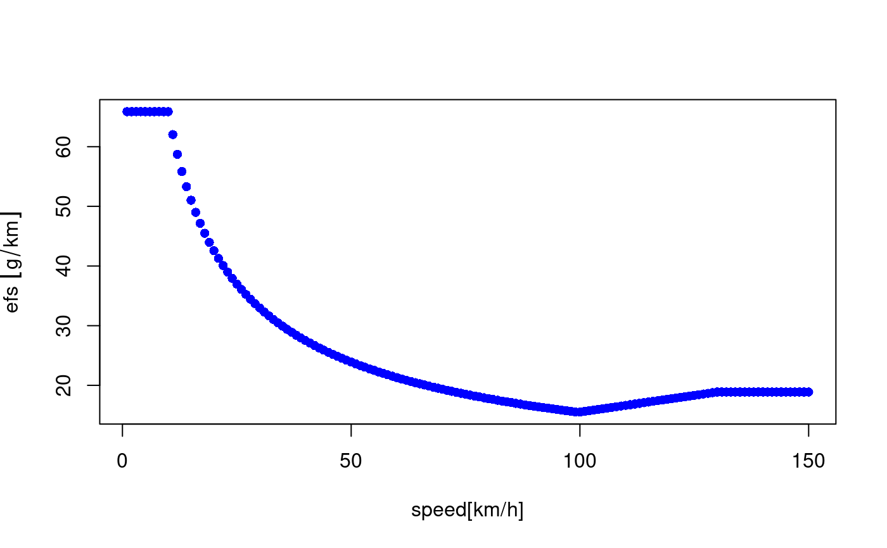

ef_ldv_speed.Rdef_ldv_speed returns speed dependent emission factors. The emission factors
comes from the guidelines EMEP/EEA air pollutant emission inventory guidebook
http://www.eea.europa.eu/themes/air/emep-eea-air-pollutant-emission-inventory-guidebook
ef_ldv_speed(v, t = "4S", cc, f, eu, p, x, k = 1, show.equation = FALSE)
| v | Character; category vehicle: "PC", "LCV", "Motorcycle" or "Moped |
|---|---|
| t | Character; sub-category of of vehicle: PC: "ECE_1501", "ECE_1502", "ECE_1503", "ECE_1504" , "IMPROVED_CONVENTIONAL", "OPEN_LOOP", "ALL", "2S" or "4S". LCV: "4S", Motorcycle: "2S" or "4S". Moped: "2S" or "4S" |
| cc | Character; size of engine in cc: PC: "<=1400", ">1400", "1400_2000", ">2000", "<=800", "<=2000". Motorcycle: ">=50" (for "2S"), "<=250", "250_750", ">=750". Moped: "<=50". LCV : "<3.5" for gross weight. |
| f | Character; type of fuel: "G", "D", "LPG" or "FH" (Full Hybrid: starts by electric motor) |
| eu | Character; euro standard: "PRE", "I", "II", "III", "III+DPF", "IV", "V", "VI" or "VIc" |
| p | Character; pollutant: "CO", "FC", "NOx", "HC", "PM", "NMHC", "CH4", "CO2", "SO2" or "Pb". Only when p is "SO2" pr "Pb" x is needed. Also polycyclic aromatic hydrocarbons (PAHs) and persistent organi pollutants (POPs). |
| x | Numeric; if pollutant is "SO2", it is sulphur in fuel in ppm, if is "Pb", Lead in fuel in ppm. |
| k | Numeric; multiplication factor |
| show.equation | Logical; option to see or not the equation parameters |
An emission factor function which depends of the average speed V g/km
The argument of this functions have several options which results in different combinations that returns emission factors. If a combination of any option is wrong it will return an empty value. Therefore, it is important ti know the combinations.
t = "ALL" and cc == "ALL" works for several pollutants because emission fators are the same. Some exceptions are with NOx and FC because size of engine.
Pollutants: "CO", "NOx", "HC", "PM", "CH4", "NMHC", "CO2", "SO2", "Pb", "FC".
PAH and POP: "indeno(1,2,3-cd)pyrene", "benzo(k)fluoranthene", "benzo(b)fluoranthene", "benzo(ghi)perylene", "fluoranthene", "benzo(a)pyrene", "pyrene", "perylene", "anthanthrene", "benzo(b)fluorene", "benzo(e)pyrene", "triphenylene", "benzo(j)fluoranthene", "dibenzo(a,j)anthacene", "dibenzo(a,l)pyrene", "3,6-dimethyl-phenanthrene", "benzo(a)anthracene", "acenaphthylene", "acenapthene", "fluorene", "chrysene", "phenanthrene", "napthalene", "anthracene", "coronene", "dibenzo(ah)anthracene" (g/km).
Dioxins and furans: "PCDD", "PCDF" and "PCB" expressed as (g equivalent toxicity / km).
Metals: "As", "Cd", "Cr", "Cu", "Hg", "Ni", "Pb", "Se", "Zn" (g/km).
NMHC:
ALKANES: "ethane", "propane", "butane", "isobutane", "pentane", "isopentane", "hexane", "heptane", "octane", "TWO_methylhexane", "nonane", "TWO_methylheptane", "THREE_methylhexane", "decane", "THREE_methylheptane", "alcanes_C10_C12", "alkanes_C13".
CYCLOALKANES: "cycloalcanes".
ALKENES: "ethylene", "propylene", "propadiene", "ONE_butene", "isobutene", "TWO_butene", "ONE_3_butadiene", "ONE_pentene", "TWO_pentene", "ONE_hexene", "dimethylhexene".
ALKYNES:"ONE_butine", "propine", "acetylene".
ALDEHYDES: "formaldehyde", "acetaldehyde", "acrolein", "benzaldehyde", "crotonaldehyde", "methacrolein", "butyraldehyde", "isobutanaldehyde", "propionaldehyde", "hexanal", "i_valeraldehyde", "valeraldehyde", "o_tolualdehyde", "m_tolualdehyde", "p_tolualdehyde".
KETONES: "acetone", "methylethlketone".
AROMATICS: "toluene", "ethylbenzene", "m_p_xylene", "o_xylene", "ONE_2_3_trimethylbenzene", "ONE_2_4_trimethylbenzene", "ONE_3_5_trimethylbenzene", "styrene", "benzene", "C9", "C10", "C13".
{ # Do not run # Passenger Cars PC # Emission factor function V <- 0:150 ef1 <- ef_ldv_speed(v = "PC",t = "4S", cc = "<=1400", f = "G", eu = "PRE", p = "CO") efs <- EmissionFactors(ef1(1:150)) plot(Speed(1:150), efs, xlab = "speed[km/h]") # Quick view pol <- c("CO", "NOx", "HC", "NMHC", "CH4", "FC", "PM", "CO2", "Pb", "SO2") f <- sapply(1:length(pol), function(i){ ef_ldv_speed("PC", "4S", "<=1400", "G", "PRE", pol[i], x = 10)(30) }) f # PAH POP ef_ldv_speed(v = "PC",t = "4S", cc = "<=1400", f = "G", eu = "PRE", p = "indeno(1,2,3-cd)pyrene")(10) ef_ldv_speed(v = "PC",t = "4S", cc = "<=1400", f = "G", eu = "PRE", p = "napthalene")(10) # Dioxins and Furans ef_ldv_speed(v = "PC",t = "4S", cc = "<=1400", f = "G", eu = "PRE", p = "PCB")(10) # NMHC ef_ldv_speed(v = "PC",t = "4S", cc = "<=1400", f = "G", eu = "PRE", p = "hexane")(10) # List of Copert emission factors for 40 years fleet of Passenger Cars. # Assuming a euro distribution of euro V, IV, III, II, and I of # 5 years each and the rest 15 as PRE euro: euro <- c(rep("V", 5), rep("IV", 5), rep("III", 5), rep("II", 5), rep("I", 5), rep("PRE", 15)) speed <- 25 lef <- lapply(1:40, function(i) { ef_ldv_speed(v = "PC", t = "4S", cc = "<=1400", f = "G", eu = euro[i], p = "CO", show.equation = FALSE)(25) }) # to check the emission factor with a plot efs <- EmissionFactors(unlist(lef)) #returns 'units' plot(efs, xlab = "age") lines(efs, type = "l") # Light Commercial Vehicles V <- 0:150 ef1 <- ef_ldv_speed(v = "LCV",t = "4S", cc = "<3.5", f = "G", eu = "PRE", p = "CO") efs <- EmissionFactors(ef1(1:150)) plot(Speed(1:150), efs, xlab = "speed[km/h]") lef <- lapply(1:40, function(i) { ef_ldv_speed(v = "LCV", t = "4S", cc = "<3.5", f = "G", eu = euro[i], p = "CO", show.equation = FALSE)(25) }) # to check the emission factor with a plot efs <- EmissionFactors(unlist(lef)) #returns 'units' plot(efs, xlab = "age") lines(efs, type = "l") # Motorcycles V <- 0:150 ef1 <- ef_ldv_speed(v = "Motorcycle",t = "4S", cc = "<=250", f = "G", eu = "PRE", p = "CO",show.equation = TRUE) efs <- EmissionFactors(ef1(1:150)) plot(Speed(1:150), efs, xlab = "speed[km/h]") # euro for motorcycles eurom <- c(rep("III", 5), rep("II", 5), rep("I", 5), rep("PRE", 25)) lef <- lapply(1:30, function(i) { ef_ldv_speed(v = "Motorcycle", t = "4S", cc = "<=250", f = "G", eu = eurom[i], p = "CO", show.equation = FALSE)(25) }) efs <- EmissionFactors(unlist(lef)) #returns 'units' plot(efs, xlab = "age") lines(efs, type = "l") }#> a = 42.06, b = -1.792, c = 0.0469, d = -0.0006358, e = 4.662e-06, f = -1.373e-08 #> Equation = (a +b*V + c*V^2 + d*V^3 + e*V^4 + f*V^5)*1